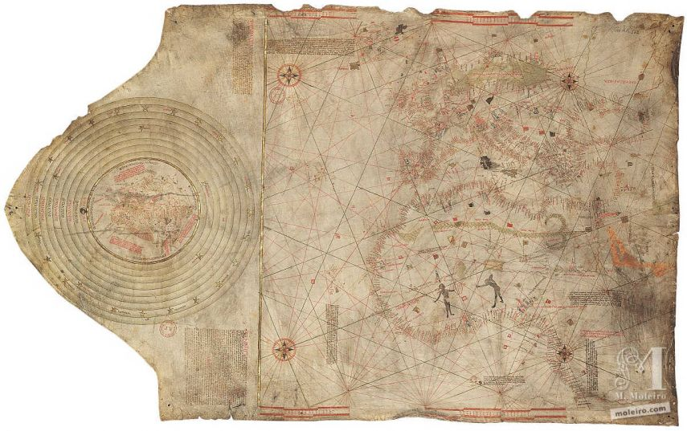

Einleitung
Der Columbus Day ist ein umstrittener Feiertag, der in den USA jährlich am zweiten Montag im Oktober begangen wird. Während einige ihn als Symbol für Entdeckung und Fortschritt betrachten, sehen andere darin ein Sinnbild für Kolonialismus und die damit verbundenen negativen Folgen für indigene Völker.
Was ist der Columbus Day?
Der Columbus Day erinnert an die Ankunft von Christoph Kolumbus in der Neuen Welt am 12. Oktober 1492. Es ist ein bundesweiter Feiertag in den USA, der besonders in Städten mit einer großen italienisch-amerikanischen Gemeinschaft gefeiert wird.
Historischer Hintergrund
Christoph Kolumbus war ein italienischer Seefahrer, der von den spanischen Monarchen Isabella und Ferdinand unterstützt wurde, um eine westliche Route nach Indien zu finden. Am 12. Oktober 1492 erreichte er schließlich eine Insel in der Karibik, die er San Salvador nannte. Kolumbus führte insgesamt vier Reisen nach Amerika durch und leitete eine Ära europäischer Exploration und Kolonialisierung ein.
Die Bedeutung des Columbus Day
Der Columbus Day wurde 1937 von Präsident Franklin D. Roosevelt als nationaler Feiertag in den USA eingeführt. Er sollte den Mut und die Entschlossenheit von Kolumbus symbolisieren sowie den Beitrag italienischer Einwanderer zur amerikanischen Gesellschaft würdigen.
Kritik am Columbus Day
Der Columbus Day ist zunehmend umstritten. Kritiker betonen, dass Kolumbus' Ankunft zur Unterwerfung, Versklavung und dem Tod vieler indigener Völker führte. Historiker weisen darauf hin, dass Kolumbus nicht „Amerika entdeckt“ hat, sondern indigene Zivilisationen bereits lange zuvor existierten.
Der Indigenous Peoples' Day
Als Reaktion auf die Kritik haben viele Bundesstaaten und Städte den Columbus Day abgeschafft und durch den Indigenous Peoples' Day ersetzt. Dieser Tag soll die Geschichte, Kultur und Errungenschaften der indigenen Völker Nordamerikas würdigen.
Fazit
Der Columbus Day bleibt ein polarisierendes Thema. Während einige ihn als Teil der amerikanischen Geschichte betrachten, kritisieren andere die damit verbundene Verherrlichung der Kolonialzeit. Die wachsende Anerkennung des Indigenous Peoples' Day zeigt, dass sich das Bewusstsein für die Geschichte und die Rechte indigener Gemeinschaften verändert.